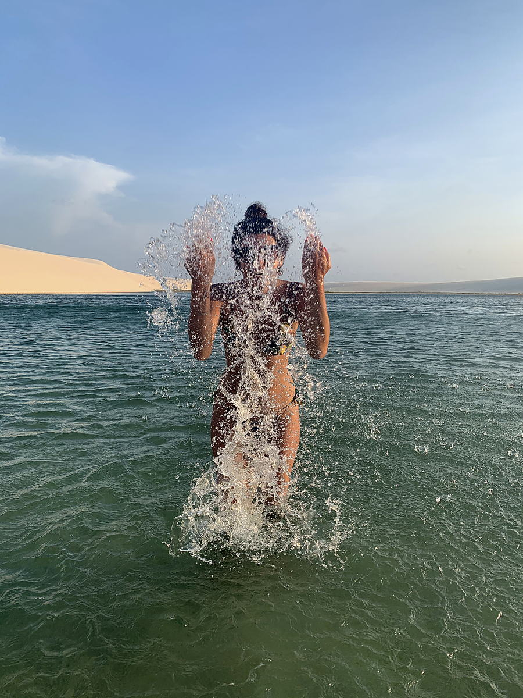

La Route des Vents
De Cumbuco à Atins. Vent régulier d'août à janvier, lagunes d'eau plate et des centaines de kilomètres à parcourir dans une seule direction.
La côte du nordeste brésilien a exactement ce pour quoi les kitesurfeurs voyagent: du vent qui entre presque tous les après midi pendant des mois, de l'eau plate dans les lagunes, et assez de littoral pour naviguer en ligne droite pendant des jours sans repasser sur la même plage.
Ce qu'elle n'a pas, c'est quelqu'un qui organise l'autre moitié dans votre langue. D'où vient le matériel. Qui emmène votre sac à la ville suivante. Ce qui se passe quand le vent tombe à quinze kilomètres de l'arrivée. Quelle école enseigne et laquelle vend seulement des cours.
Cette moitié là, c'est notre travail.
Six étapes, une direction, toujours vent arrière
Vous pouvez faire le tout ou n'importe quel morceau. La plupart des gens choisissent trois ou quatre étapes et prennent leur temps.
Quarante minutes de l'aéroport de Fortaleza. Une grande lagune, une logistique facile, et l'endroit où la plupart atterrissent pour leurs premiers jours.
Eau plate et longue avec un vent régulier, plus calme que sa voisine célèbre et meilleur endroit pour naviguer vraiment toute la journée.
La lagune, la dune, la nuit. Fréquenté, et qui vaut deux ou trois jours justement pour cette raison.
Là où la rivière rejoint la mer et où la foule se dissipe. L'étape qui transforme le voyage en expédition.
Le delta du Parnaíba, le seul delta en mer ouverte des Amériques. Mangrove, bancs de sable et presque personne.
Le vent d'un côté, les dunes des Lençóis de l'autre. Le meilleur endroit possible pour terminer une semaine sur l'eau.
La dernière étape est la raison pour laquelle cette route fonctionne comme un seul voyage. Vous terminez une semaine de navigation en entrant dans un désert plein de lagunes, avec tout déjà organisé.
Que vous appreniez ou que vous naviguiez déjà
Vous voulez apprendre
Nous vous plaçons dans une école qui enseigne correctement, dans votre langue quand c'est possible, et pas dans celle qui paie la plus grosse commission. Matériel compris, cours répartis sur plusieurs jours pour que le corps suive, et une base à eau plate et vent régulier pour progresser au lieu de lutter.
Vous naviguez déjà
Des downwinds d'une ville à l'autre, avec bateau ou véhicule de soutien le long de la côte, une équipe qui sait où les bancs de sable ont bougé, et vos bagages qui attendent à l'arrivée. Vous naviguez, nous gérons le reste.
Comment une journée se passe vraiment
Les distances vont de courts sauts à de longues journées complètes, ajustées à votre niveau et non à une brochure. Dites nous honnêtement ce que vous savez faire et personne ne se blesse ni ne se ridiculise.
En gros d'août à janvier
Les alizés montent en puissance sur la seconde moitié de l'année et tiennent pendant des mois. Les bords de cette fenêtre bougent chaque saison, alors prenez ceci comme sa forme plutôt que comme une promesse.
À savoir: les mois de vent les plus forts et les lagunes les plus pleines des Lençóis ne se recouvrent pas complètement. Si vous voulez les deux au mieux, dites le nous et nous vous montrerons où se situe le compromis. C'est le genre de chose que personne ne mentionne avant que le billet soit acheté.



Apportez le vôtre ou louez
Louer
Disponible à chaque étape. Nous le prévoyons à l'avance, donc le matériel qui vous attend est récent et en bon état, et vous n'avez pas à négocier en portugais votre premier matin.
Apporter le vôtre
Ça marche, et c'est souvent moins cher sur un long voyage. Nous vous dirons ce que les compagnies locales facturent réellement pour une housse de planche et nous la faisons circuler entre les villes sans que vous la portiez.
Dites nous comment vous naviguez et quand vous pouvez venir
Niveau, dates, combien de jours, seul ou avec des amis. Nous revenons avec un itinéraire qui tient et avec le coût, avant que vous ne réserviez quoi que ce soit.
yasminnbistricky@gmail.com